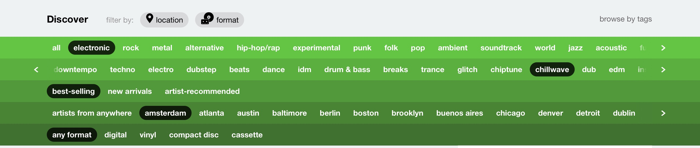

Published on Medium on July 15th 2023 - LINK
In the days of Netscape and Alta Vista, “surfing” the web was a common expression to describe browsing the internet. It feels out of fashion today, I don’t know if it’s just linguistics or because the metaphor of surfing doesn’t seem to apply anymore.
Reflecting on the early days of the web, I was a teenager then, makes me think of the slow-loading pages and the excitement of being connected with my friends via online chats, writing emails instead of letters, having your own page written from scratch in plain HTML. But also, looking for information was about navigating hypertext, text that had images, animated gifs, and links that expanded one word to another page and another.
Nostalgia apart, now the internet is a different place.
My experience of the internet today is overwhelming, it is still about browsing content, but I don’t feel like I’m surfing, parts of it are about navigating between infinite tabs and noisy advertisements, and some other parts feel more similar to zapping between channels: Amazon, Netflix, YouTube, TikTok, Instagram; Given the state of the rest of the browsing experience, these services offer content that doesn’t require any effort to be found, it’s great, isn’t it? The downside is that there is little intentionality to what we consume. For example, it seems that 80% of all content played on Netflix comes from recommendations [1]. These services want our attention, they hunt us. Browsing the web should make people feel in the opposite way, like hunters for information, looking for gems, unique connections, unexpected encounters; rather than being hunted for attention by average and mediocre content. I believe this conversation is as much about technology as it is about our attitude towards the internet and services over the internet.
Take music for example: I always loved the idea of having a collection; something that I curated, something that I’m proud of. That was how I felt when music was on music cassettes, Napster or ripped CDs and iPods. With the music streaming services that feeling of ownership, pride, and enjoyment has been lost in some capacity. Since the advent of services like Spotify and Apple Music, I felt like music has become just a background for dinners, work, bike rides, and consequently, I rarely remember the names of the songs or learn something new about authors or admire the album arts. Personally, I don't want to give in. That's why I like to use Bandcamp; it allows efficient browsing, allows people to own a collection, and it allows people to download their collection of songs and albums in a royalty-free format. Cory Doctorow's book "Information doesn't want to be free" has a lot of insight on why this is a great thing and how it doesn't hurt the artists[2].
When I browse music on Bandcamp there are no recommendations. Actually, there are, but are limited to a human-curated section, where you can find best-ofs, album of the day, and other curated featured articles. These are great and interesting, but the browsing interface is also great, it is rich and allows to go granular into genres and subgenres and sub subgenres. 
This interface is a great entry point to browse music and allows a person to learn more about what they like, rather than what the system thinks they like. The browsing interface is not the only place where poeple can navigate and explore different music; the real power of Bandcamp is the ability to see the collections of others, what they liked, what is on their wishlists, what they have spent money on. Some of them are just other users, others are the artists themselves. My path of discovery for new music, or hunting for new music, is to look into music I like and follow a link to other people’s collections, and listen to the previews of the music that they own. Sometimes I find gems, I discover new musicians, some other time I appreciate the music I didn’t know (and probably won’t stumble upon), and some others I listen to something that make me just close the tab. I’m a hunter, I feel like one, I feel pride and a sense of accomplishment when I found something I like, I put that album on the wishlist, and listen to it again the next day. If I think it’s worth it, I’ll buy it.
You might think, let a machine do the work, suggestions algorithms have been developed with the intent of freeing people’s time. As humans we have discovered and innovated thanks to serendipity, while looking for something, we found something else, it's the case of Penicillin or X-rays,and many many more; the path to discovery is as important as the final result.
Another aspect of being a hunter of information is that the discovered content is something we feel connected to. In fact, my music collection feels a lot more valuable than auto-generated playlists or generic audio streams. I curated the collection, it’s highly intentional, it’s the result of work and play, it’s a thing that I want to put on display. Having the ability to download that collection, DRM free, on my computer gives me the sense of ownership that a song from iTunes never gave. I can organize my folders in the order I like, I can use that folder on my old mp3 player or on my phone, I can choose to play that song with whatever software I like or even build my own. It requires work, but really this feels like play. The value of this digital collection feels personal, intimate, and has an aura.
The experience that I have in Bandcamp is great. I feel connected to the artists, and to the music, I feel my collection has value because is the result of a journey of clicks and scrolls. I own the music and I can store it on any local storage I want. I leave the noise of music recommendations and streaming to the rest.
I wish the same would exists for movies, and it used to be like that when we used to have physical supports for movies. We had collections of DVDs and VHSs. When the streaming revolution happened we lost the ability to own our media. For example, I love to do retrospectives of movies of a certain director, where I watch, often during long periods of months, all their movies. My favorite directors’ movies are scattered over many platforms, from Netflix to HBO, from dafilms.com to internet archive. Most often the effort to get to find these movies feels harder online than it feels in the analong world, where I can find DVDs on eBay, and dust off the usb DVD player that I have at the bottom of a closet.
The noise of the internet is amplified by inefficient search, disturbing ads and invasive reccomendations. I believe that reccommendation systems should never be in the way of browsing and discovery. Content providers should, as a principle, offer multiple ways of getting to content: choosing between recommendations, browsing, good filters for search; this will make people feel like hunters if the want to, not only being hunted by recommendations and advertisement.
Secondly while the path to hunting is made of research, browsing, discovery, curiosity, the result of being a hunter is to find the valuable content, whatever that content is, can be media, like music, movies, scientific papers, links etc.. and the hunter needs a place where he can feel he is the owner of that content, he can organize it, show it, and it should be reliable and secure. This again reinforces the value of data ownership and points towards local storage or an hypothetical personal cloud, or personal server to store a persons's collection.
To summarise these are the set of principles that guides me in designing for the web:
- Make people feel like hunters
- Media for sale should be downloadable DRM-free
- Reccomendations should not be in the way of browsing and discovery
- Browsing interfaces should help navigate metadata
- Filters should be part of search and browsing to allow a person to express their intent
When I use the web, and I feel like a hunter, I feel a sense of freedom and empowerement. I hope to gift that enjoyment to others and I hope more designers and technologists will be inspired by creating services guided by these principles.
[1] Mike Scoggin, "Netflix Recommendation System: Inside the Algorithm," Medium, October 26, 2020, https://mikescogs20.medium.com/netflix-recommendation-system-inside-the-algorithm-55edc1712748.
David Chong, "Deep Dive into Netflix's Recommender System," Towards Data Science, April 30, 2020, https://towardsdatascience.com/deep-dive-into-netflixs-recommender-system-341806ae3b48.
New America, "Why Am I Seeing This?: Case Study: Netflix," accessed July 15, 2023, https://www.newamerica.org/oti/reports/why-am-i-seeing-this/case-study-netflix/.
[2] Cory Doctorow, Information Doesn't Want to Be Free: Laws for the Internet Age (San Francisco: McSweeney's, 2014) https://en.wikipedia.org/wiki/Information_Doesn%27t_Want_to_Be_Free